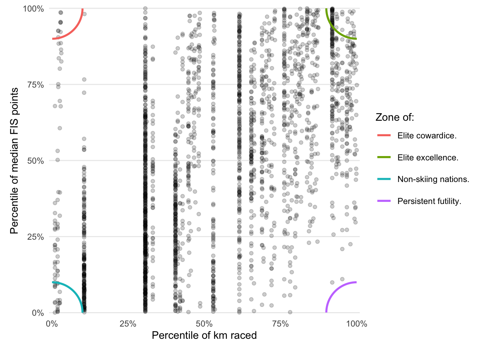

This is a silly post with some silly summaries of the prior complete month of FIS races. Do not take any of it too seriously. I will probably add things to it with each month.
November 2025
The Basics
The month of November included 56 distance races and 26 sprint races. There were a total of 1,594 male participants and 907 female participants 1.
1 “Participants” include all competitors listed, regardless of whether they started or finished.
Who showed up a lot?
The most number of races were completed by 3 athletes, which in this case was 9:
| Athlete | Gender | # events |
|---|---|---|
| MATTEI Theo | Men | 9 |
| GUENIN Leo | Men | 9 |
| MAJBAECK Moa | Women | 9 |
Which races were fast & slow?
These were the “fastest”2 men’s & women’s distance races:
2 “Fast” here means the median seconds per kilometer across all finishers. Keep a close eye on these and the next few items, as I’m not likely to always check carefully for errors on the FIS website regarding race length.
| Date | Gender | Type | Site | Nation | Length | Tech | Format | Median sec/km |
|---|---|---|---|---|---|---|---|---|
| 2025-11-30 | Men | fis,swiss-cup | St. Moritz | SUI | 10 | F | Interval | 134.5 |
| 2025-11-28 | Women | fis,spar-norgescup | Gaalaa | NOR | 10 | F | Interval | 155.8 |
And these were the slowest men’s & women’s distance races:
| Date | Gender | Type | Site | Nation | Length | Tech | Format | Median sec/km |
|---|---|---|---|---|---|---|---|---|
| 2025-11-30 | Men | fis,coppa-italia,junior,u20 | Santa Caterina Valfurva | ITA | 10 | C | Interval | 208.4 |
| 2025-11-30 | Women | fis,coppa-italia,junior,u20 | Santa Caterina Valfurva | ITA | 10 | C | Interval | 253.8 |
The fastest sprint qualifiers:
| Date | Gender | Type | Site | Nation | Length | Tech | Median sec/km |
|---|---|---|---|---|---|---|---|
| 2025-11-29 | Men | wc, | FIN | 1.4 | C | 116.2 | |
| 2025-11-27 | Women | fis,junior,u20 | FRA | 1.3 | F | 130.0 |
And the slowest sprint qualifiers:
| Date | Gender | Type | Site | Nation | Length | Tech | Median sec/km |
|---|---|---|---|---|---|---|---|
| 2025-11-29 | Men | fis,spar-norgescup | NOR | 1.3 | C | 168.7 | |
| 2025-11-14 | Women | fis,oloksen-tykkikisat | FIN | 1.2 | C | 205.0 |
Who raced the furthest?
Who raced the most total kilometers?3 Here I’m only counting finishers (obviously) and also making an attempt to count each round of a sprint race. So if you make it to the finals in a 1.5km sprint race you credit for 6km of racing.
3 I know. This massively favors distance skiers. It’s my website, and distance racing is just cooler.
The men who raced the most kilometers:
| Name | Nation | km raced |
|---|---|---|
| GUENIN Leo | SUI | 75.4 |
| MATTEI Theo | SWE | 73.9 |
| GISLASON Einar Arni | ISL | 71.2 |
| UDA Takatsugu | JPN | 70.0 |
| RIEKKOLA Nikolaj | SWE | 70.0 |
| BARNETT Adam | AUS | 70.0 |
And the women who race the most kilometers:
| Name | Nation | km raced |
|---|---|---|
| MAJBAECK Moa | SWE | 73.9 |
| PRICE Hannah | AUS | 72.7 |
| NILSSON Wilma | SWE | 71.5 |
| MOON Isabella | AUS | 71.2 |
| ERIKSSON Mathea | SWE | 67.4 |
| GUNILLASSON PAAVE Evelina | SWE | 67.4 |
Zones
Now for something very silly. Let’s take all the skiers and their total kilometers raced along with their median FIS points across those races, including both sprint and distance events. Since those scales point in opposite directions (small FIS points are good, while small kilometers raced is bad) we’ll convert them both to percentiles. So you want to be in a high percentile of both, just like standardized tests.
If we plot this we can annotate the four corners as distinct zones:

For this edition I will skip calling out specific skiers in each of the four zones, but I might do so in the future.